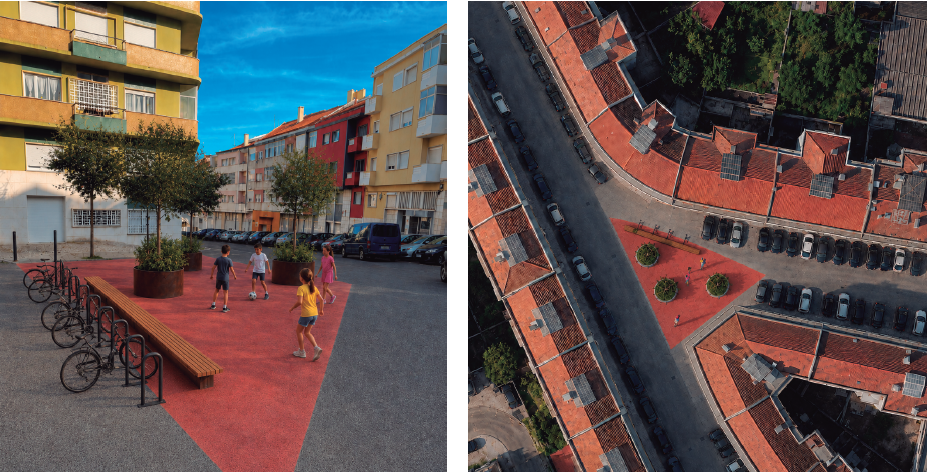
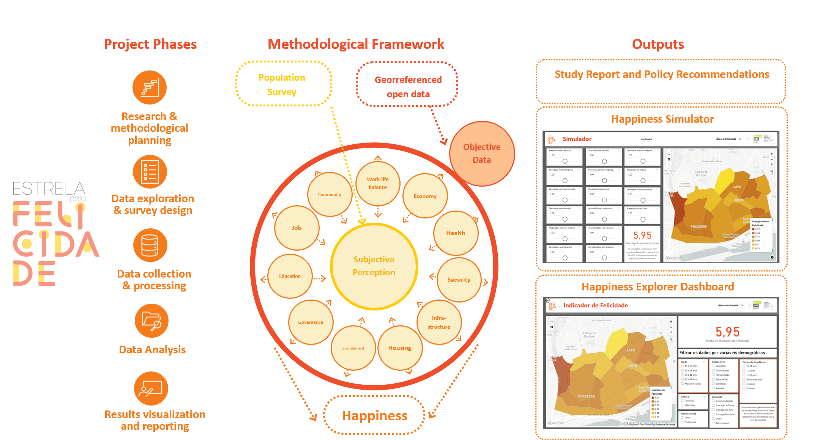
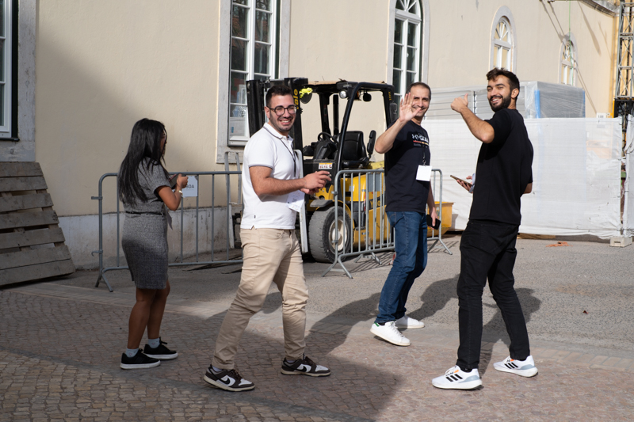
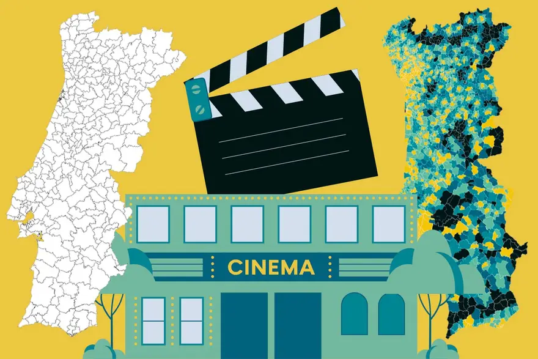
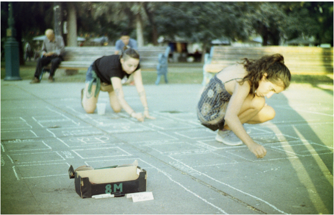

selected works
A selection of projects spanning urban planning, urban innovation, technology, and consultancy.
2026
ViraRUA: Turning the Street into an Active Urban Refuge
A tactical, low-cost intervention reclaiming a residual street corner in Olaias as a small neighbourhood square.
- Tactical Urbanism
- Public Space
- Urban Design

2025
Estrela pela Felicidade — A Happiness Indicator for Estrela Parish
A multidimensional happiness and quality-of-life indicator combining objective data with a survey of 400 residents.
- Urban Analytics
- Wellbeing
- Data Visualization

2025
Collective Mapping for Smarter Cities
A hands-on GeoMundus 2025 workshop on collective and collaborative mapping for more equitable, sustainable cities.
- Collective Mapping
- Workshop
- Participation

2025
Portugal Distante — Accessibility Analysis for Expresso
A geospatial study of territorial inequalities in access to essential services across mainland Portugal, for Expresso's investigative series.
- Accessibility
- Geospatial Analysis
- Data Journalism

2020
Mapping the Sexist Violence
A live, participatory mapping action during the 8M march in Mendoza, making everyday experiences of gender-based violence in urban space visible.
- Participatory Mapping
- Gender
- Activism
